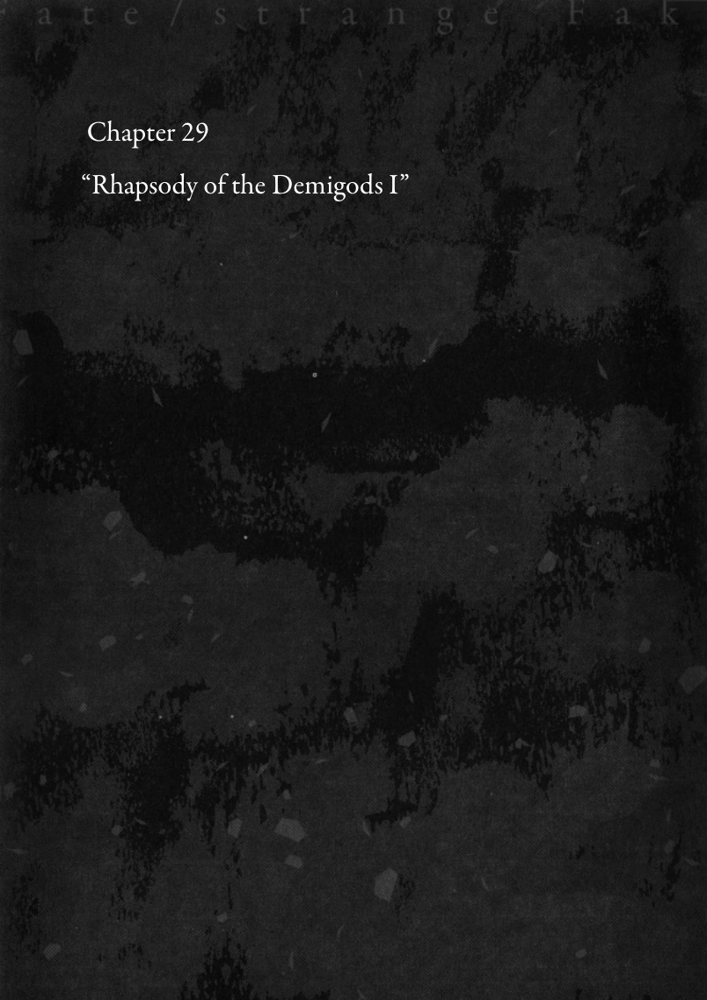

Oeste de Snowfield
Pouco antes.
"Vai se entregar ao lamento, Touro dos Céus?"
Alcides via diante de si apenas uma massa de poder tremendo.
Empunhava o arco sobre uma plataforma rochosa que sobressaía da água naquele terreno inundado tanto pelo dilúvio que ele próprio provocara quanto pela destruição causada pelo gigantesco cumulonimbus à sua frente.
Mas o Touro dos Céus - Gugalanna, avatar da chuva torrencial e da tempestade de trovões - já não via Alcides de pé no solo diante de si.
Ele sentiu o Núcleo Divino da deusa Ishtar desaparecer da superfície, rompendo o vínculo entre si, o templo e Huwawa.
A Senhora dos Céus estava despencando às profundezas da terra.
A personificação da tempestade fora, em certos mitos, o primeiro esposo de Ereshkigal, e, por isso, a proximidade entre seu Núcleo Divino e Ishtar sempre a empurrara para mais perto do submundo. Perdendo a deusa que servia de base para sua manifestação atual, o alicerce de sua existência entrou rapidamente em colapso.
Se deixado por conta própria, ele devastaria tudo para vingar a deusa, sendo capaz de arrasar Snowfield antes de esgotar a magia que o sustentava e se tornar um ciclone tropical comum formado no continente.
Mas havia um homem que não permitiria isso.
Abater cem cabeças
"Nine Lives"
Uma flecha feita para perfurar qualquer coisa com uma propulsão semelhante à de um cometa, muito acima do disparo de um tanque.
No entanto, sua trajetória se recusava a seguir uma linha reta. A flecha tornava-se uma serpente tentando enroscar o mundo e se desviava da linha de tiro.
Numa contradição esmagadora, ela era ao mesmo tempo uma lança que jamais se dobrava e um chicote livremente flexível.
E o que tornava isso possível era o fruto das técnicas cultivadas por aquele herói lendário ao longo da soma de suas aventuras.
Diante de uma técnica inacreditável, saída diretamente das lendas heroicas nas quais ele abatera toda sorte de bestas místicas, esperava-se que o furacão, já debilitado pela perda de seu poder divino, se dispersasse -
Mas Gugalanna ainda era, apesar de tudo, uma besta divina.
O fato de ter se conectado uma vez ao templo por meio da deusa Ishtar não fazia da partida da deusa motivo suficiente para que ele caísse de joelhos.
Por que razão aceitaria ser perfurado e morrer por uma flecha disparada por um homem - ainda que fosse um herói - que voluntariamente descartara o poder dos deuses?
Foi isso que enfim fez os olhos do furacão vivo se voltarem para aquele foco de hostilidade.
Por ser uma besta divina, ou talvez por servir a Ishtar, Gugalanna tinha certeza da presença dele.
Havia algo humanoide parado diante dele.
Era grande para os padrões da humanidade, mas ainda assim pequeno demais para ser visto com clareza pelos olhos gigantescos de Gugalanna. Ainda assim, Gugalanna sentia nele a Origem Espiritual de um herói lendário de eras antigas e o lodo negro-avermelhado que o preenchia.
Sabia com certeza que aquilo jamais poderia ser libertado.
Sua mera existência era uma tragédia que macularia o mundo e a humanidade amada por Ishtar.
Alguns momentos antes, ele teria tolerado isso.
Enquanto o ar ainda era o da Era dos Deuses, aquilo continuaria perigoso, mas seria apenas mais um fenômeno entre muitos. Poderia manchar a terra, mas não iria a ponto de ferir aqueles que nela viviam, segundo a avaliação de Gugalanna.
Mas agora já não era assim.
Agora que Ishtar caíra no submundo, aquele ser era uma ameaça aberta à terra que ela governava.
Portanto, seu único papel agora era pisotear o lodo, rejeitá-lo e devolvê-lo às trevas.
Essa era sua única razão para permanecer manifestado num mundo sem a deusa.
Com isso decidido, Gugalanna reorganizou suas prioridades imediatamente.
Derrotar o inimigo dos deuses mesmo que isso custasse a terra em que ele fora consagrado.
Gugalanna fez vibrar violentamente o próprio corpo - o cumulonimbus comprimido por Energia Mágica -, como se quisesse fazer a nação inteira ouvir seu anúncio das leis do mundo.
Ele fez o ar tremer, fosse para intensificar o poder que os deuses haviam deixado para trás, fosse para fazer o homem à sua frente estremecer.
Os vendavais ganharam direção, interrompendo todos os ventos que assolavam o lado oeste dos Estados Unidos.
Todo o vento, todo o granizo e todo o trovão se concentraram sobre Snowfield, enquanto o furacão, com mais energia do que um grande terremoto, despejava 80% de seu poder em lanças de vento e trovão.
Com tanta energia natural reunida, despedaçá-la seria um ato de rebelião não contra os deuses, mas contra o próprio planeta Terra.
Ele lançou esse poder contra a flecha envolta em serpentes que vinha em sua direção, esperando vaporizá-la junto com Alcides no caminho.
- Eis aqui o poder: a definição da retidão. - Eis aqui o deus: a definição do mundo. - Eis aqui a morte: a definição da humanidade. - Nada pertence às mãos daqueles que esqueceram a proteção da deusa.
Essas teriam sido as palavras que a besta divina estaria gritando, caso fosse capaz de falar.
As lanças de relâmpago e vendaval lançadas por ela fizeram tremer o céu e a terra como um lamento fúnebre pela deusa.
Mas a besta divina esqueceu uma coisa: apesar de humano, aquele herói havia ultrapassado os limites da própria humanidade.
A outra besta no céu sabia muito bem disso.
Para se vingar de todas as leis criadas pelos deuses, o herói abandonara o passado heroico.
Olhando apenas para o resultado, sem o processo, aquele herói superara os limites do que é um herói.
Alcides.
Um herói lendário originalmente invocado como Archer, depois convertido numa Origem Espiritual de Avenger pelos Selos de Comando de seu Mestre e pelo "lodo" cheio de caos e malícia.
Separar-se dos deuses.
Dedicar tudo à vingança.
Nenhuma dessas duas coisas diminuía sua essência como herói sem igual.
Um herói capaz de transformar o tom lamentoso do rugido da besta divina em seu estertor de morte.
A torrente de energia engoliu o herói vingador.
Toda a energia de um furacão de cem metros foi comprimida em dois redemoinhos, carregando em forma de chifres de Gugalanna e atravessando o lugar onde Alcides estava.
Uma torrente de poder.
Era capaz de desbastar a Origem Espiritual do herói, apagando junto o lodo e o veneno letal da Hidra dentro dele.
O Nine Lives que ele disparara foi apagado no choque contra os redemoinhos. A plataforma sobre a qual Alcides se erguia tornou-se um cadafalso destinado a ser moído junto com o condenado.
O Espírito Heroico engolido pelo vento de morte seria apagado em menos de três segundos.
Quando 30% de si já havia sido raspado, ele soltou uma risada de escárnio.
"Você está exposto..."
Naquele instante - o ar que envolvia o mundo mudou.
A presença da deusa Ishtar já havia sumido, e a Textura local de Snowfield voltava à era dos homens quando começou a se virar outra vez em direção a um ambiente heterogêneo de outra natureza.
O pivô dessa alteração era a Origem Espiritual esfolada de Alcides.
A Energia Mágica semelhante a lodo que cobria seu corpo tentou preencher as partes perdidas de sua Origem Espiritual, mas, em vez disso, fluiu para dentro de Gugalanna e começou a devorar sua aura divina.
Quando Gugalanna percebeu o desastre, já era tarde demais.
O golpe que deveria ter apanhado completamente o oponente - os redemoinhos da Era dos Deuses carregados com sua aura divina e com a energia dos vendavais - fora usado pelo solitário vingador como armadilha contra ele.
A Energia Mágica na ponta da flecha repelida se expandiu em forma de serpente.
As flechas estilhaçadas em nove partes ascenderam para formar a Hidra, e aquele dragão venenoso de nove cabeças tentou estrangular a parte mais espessa do cumulonimbus do furacão: a cabeça de Gugalanna.
"Dê isso por encerrado, besta divina."
A aura divina devorada pelo lodo e pela serpente mesclou-se e irrompeu no corpo de Alcides, mas ele se recusou a transformá-la em carne e sangue.
"É a sua vez... desta vez, será a sua espécie que pagará tributo."
A divindade repelida se recusava a soltá-lo.
Ao cravar sua Energia Mágica e o "lodo" naquela aura divina cor de relâmpago, Alcides a torceu à força, torcendo junto o espaço ao seu redor.
"Você já não governa o homem."
Gugalanna rugiu em resistência àquelas palavras.
Numa tentativa desesperada de recarregar seu poço seco de Energia Mágica, a besta divina seguiu o fio que o ligava à deusa.
Rastreou seu vínculo do destino até a deusa, sem se importar se isso o levaria a outra terra, outra linha do tempo, outro período, ou mesmo a um lugar que não conduzisse a futuro algum.
Queria negar as palavras de Alcides, não dizendo que ele estava errado sobre Gugalanna, mas que estava errado sobre Ishtar.
Mas era tarde demais.
Não restava vestígio algum da deusa Ishtar, e não havia mais fio nenhum para Gugalanna seguir. Ele pôde sentir a Origem Espiritual de Huwawa murchando rapidamente.
Mesmo assim, a besta divina continuou sua luta, concentrando vento, chuva e relâmpagos.
Havia apenas um pensamento em sua mente: se sua Origem Espiritual estava destinada a desaparecer do passado e do futuro, então precisava ao menos terminar aquela luta em empate se quisesse encarar Ishtar sem vergonha.
Uma velha cena voltou à memória do Alcides em transformação enquanto ele observava Gugalanna, que, sem desistir até o fim, aguardava impotente a própria Origem Espiritual desmoronar.
A Argo.
Imagens de quando arriscava a vida para defender o célebre navio em sua dura travessia.
Aquilo não era como os doze trabalhos que enfrentou para expiar a si mesmo.
Ali ele usava seu poder puramente em benefício de outros.
Aqueles dias a bordo daquele navio, em que podia confiar as costas e a vida aos companheiros, eram aquilo que Alcides considerava sua verdadeira glória.
Poderia ser uma alucinação causada pela dor extrema da toxina letal devorando seu corpo, mas Alcides interpretou aquilo como um fluxo de emoções transmitido pela Energia Mágica do oponente e sussurrou:
"...Então aquela deusa era a quilha da tua embarcação."
Não era possível dizer qual expressão Alcides fazia naquele momento, com o rosto oculto pela pele do Leão de Neméia.
Ainda assim, ele escolheu dirigir palavras finais à Origem Espiritual em ruínas de Gugalanna.
"Meu ódio está condenado a apodrecer quando eu inevitavelmente apodrecer."
Ele não sabia se suas palavras eram compreendidas.
Em termos de tamanho, era como uma formiga diante de um gigante, mas agora, enquanto devorava a essência da Energia Mágica do touro, aquele era o único momento em que suas palavras chegavam aos ouvidos da besta divina.
"Nada restará. Nem este lodo repulsivo, nem a divindade que estou roubando de você."
Alcides sabia exatamente quanto tempo lhe restava.
Fora grandemente afetado por ter partes de sua Origem Espiritual arrancadas havia pouco, e, em vez de absorver a divindade para repor essas partes, gastara tudo numa espécie de exoesqueleto.
Quanto tempo lhe restava?
Se o fornecimento de Energia Mágica vindo de seu contratante Bazdilot fosse interrompido, ele seria engolido instantaneamente pelo lodo e abriria mão tanto da Origem Espiritual quanto da consciência de um Espírito Heroico.
Justamente por saber que esse era o caso, o vingador tomou seu tempo para oferecer sua primeira e última demonstração de respeito à personificação das rajadas e dos trovões, Gugalanna - a besta que servia ao odioso deus.
"Retorne ao céu... Você cumpriu o seu dever."
Será que Gugalanna conseguiu ouvir?
A besta divina parou por um instante, mas apenas por alguns segundos.
Logo voltou a concentrar Energia Mágica, apenas para que Alcides a saqueasse por completo.
Ainda assim, Alcides não sentiu ódio nem tristeza naquela última resistência.
Terceiros não tinham como determinar se aquilo era um delírio causado pela torrente imensa de Energia Mágica que o banhava ou se a besta realmente havia mudado de alguma maneira.
O próprio Alcides também começava a perder os meios de verificar isso.
Suas últimas palavras à besta divina, suas memórias humanas e o restante de sua vida foram todos arrastados pela torrente colossal de energia de Gugalanna e afundaram no fundo daquele poço profundo.
O fato de ele ter conseguido preservar o próprio ego enquanto o dilúvio triturava tudo em partículas indistintas era prova suficiente do herói assombroso que ele era.
À medida que sua última luz se apagava, o mundo voltou a se inclinar em direção às suas fronteiras ambíguas.
Ele tinha certeza de uma única coisa: naquele instante, a deusa Ishtar fora substituída por uma ameaça equivalente nas terras de Snowfield.
Snowfield Oeste, região florestal
"Ayaka!?"
Ayaka desmaiou de exaustão.
Saber a segurou antes que caísse no chão. Carregando-a nos braços, declarou aos magos ao redor:
"Desculpem, mas minha prioridade é proteger a minha Mestra!"
"Perfeitamente compreensível. Não se preocupe conosco."
Rider surgiu do nada sobre seu cavalo, respondeu à voz de Saber e lançou um olhar severo à figura desconhecida acima, pronta para guardar a área.
A figura acima olhou para baixo, tentando compreender o que acontecera com a desfalecida Ayaka.
"Ele não é... um Espírito Heroico, mas está igualmente perto do arcano. Não posso me dar ao luxo de correr riscos."
Rider empunhava o arco, mas não apontava para o céu.
Era sinal de que não pretendia fazer o primeiro movimento hostil e, ao mesmo tempo, uma demonstração de que estava preparada para reagir a tempo.
Naquele momento, Saber percebeu que a atenção de Rider jamais deixava as nuvens de trovão a oeste, mas não comentou isso, pois não imaginava que pudesse levar a uma distração fatal.
"Vão. Nós lidaremos com ele."
"Fico lhes devendo uma...!"
Saber materializou o cavalo num instante e, com Ayaka nos braços, saiu cavalgando a toda velocidade na direção oposta às ruínas da floresta.
"..."
A figura silenciosa acima - o indivíduo chamado Thia - apontou o dedo para Saber... mas borboletas dançaram pelo espaço ao redor deles, fazendo toda a área tornar-se indefinida.
Assim, o gandr disparado por Thia se dispersou no interior das flutuações daquele mundo.
"Whoa, meus agradecimentos, mago da corte da era moderna.", anunciou Saber, já se afastando a galope.
"Não foi nada especial, Servo Saber. Uma contribuição insignificante, perto do fato de você ter se engajado contra aquele truculento Berserker.", respondeu o jovem que bloqueara o ataque de Thia com a Papilio Magia, Werner Ceasarmund.
E, depois de ver Saber e Ayaka sumirem de vista, Werner voltou sua atenção ao céu.
"Você não vai atrás deles?"
"A magia das borboletas já chegou ao ponto de conseguir borrar a distância entre nós, não?"
"Quem sabe? Às vezes até o grau da minha própria magia fica indefinido."
Apesar de ter acabado de bloquear magia numa situação em que um único erro poderia ser fatal, ele continuava a compor seus feitiços com pura elegância.
Isso não significava que estivesse subestimando as circunstâncias.
Cada um de seus movimentos protocolados era otimizado para manipular a Papilio Magia.
Como cada bater de asas de uma borboleta borra o mundo, ao atribuir importância à estrutura formal em contraste, ele conseguia enxergar a si mesmo como ponto de ancoragem daquele mundo.
Tohsaka Rin tinha palavras espinhosas a lhe dirigir.
"Werner! Onde você se meteu esse tempo todo!?"
Seu cabelo havia voltado à cor negra natural, mas ela continuava abrindo e fechando a mão sem parar para fazer sua Energia Mágica circular, o que sugeria que seus Circuitos Mágicos ainda não haviam voltado ao estado a que estava acostumada.
"Recebi um pedido do nosso professor. Estava prestando consultoria mágica a um autor famoso."
"Não faço a menor ideia do que você está falando, mas, vendo o estado da sua magia, imagino que já tenha chegado ao ponto em que até as suas palavras ficam vagas."
Com a aura divina de Ishtar desaparecendo daquela era, o mundo começou a se inverter de volta.
"Absolutamente correto, Tohsaka Rin. Você já descobriu a causa?"
"Como eu não descobriria?"
Ela olhou para a gigantesca nuvem de trovão pairando no oeste.
Ela brilhava intensamente, como se houvesse um pequeno sol dentro da nuvem.
A nuvem elétrica fazia sua pele formigar mesmo àquela distância. Flutuava no céu esvaziado, girando com a velocidade de um redemoinho.
Sua densa Energia Mágica e sua divindade provocavam relâmpagos incessantes. Os raios continuavam a se expandir, e o ímpeto deles fazia todos temerem que pudessem acabar engolindo o planeta inteiro.
Enquanto a turma do El-Melloi mantinha a atenção voltada ao cumulonimbus, Thia comentou sobre a interferência deles no ataque que ele havia feito contra Ayaka.
"Vocês estão tentando entrar no meu caminho, sala de aula do El-Melloi?"
"Nossa aliança com a Mestra de Saber ainda está em vigor.", respondeu Werner com um sorriso aristocrático. "Além disso... estamos fazendo o que sempre fazemos. Limpando a bagunça deixada pelo nosso veterano tolo, Escardos."
"Eu já disse... ele se foi. Não há como trazê-lo de volta."
As palavras de Thia tentavam convencê-lo tanto quanto tentavam convencer os outros. Ainda assim, os Mestres de Rider não se abalaram com o que ele disse.
O gigantesco Org Rum, de óculos, fez uma pergunta com indiferença.
"Você está falando a partir de uma observação imparcial? Não a partir de um desejo pessoal?"
"O que foi que você disse...?"
"Não é mais conveniente para você que Flat continue desaparecido?"
Embora o rosto de Thia normalmente demonstrasse poucas emoções, naquele instante ele se tingiu de raiva.
"Eu... pareço feliz por ele ter desaparecido? Pareço alguém comemorando o mundo agora que estou livre...?", disse ele enquanto fazia girar rapidamente um pequeno "satélite" ao redor de si.
O corpo de Org quase foi atado por uma Energia Mágica em forma de maldição - mas o amuleto em forma de roda que ele segurava afastou essa energia.
"Mgh... Parece que você me entendeu mal. Minhas sinceras desculpas. Perdão.", respondeu ele.
"...?"
A sinceridade no pedido de desculpas de Org fez Thia duvidar dos próprios ouvidos. Caules Forvedge suspirou e completou:
"Isso aí foi bem enganoso, Org... O Werner dá voltas demais e você corta metade do que precisa ser dito. Aff, por que todos os meus juniores sempre levam conversa a um desses extremos...?"
Depois de resmungar essa reclamação para si mesmo, Caules ergueu o olhar para Thia e continuou.
"Foi mal. O que o Org queria dizer é... do jeito que as coisas estão agora, o Flat não precisa participar de um jogo idiota de mata-mata. Você não quer que continue assim?"
"..."
A resposta inesperada pegou Thia desprevenido, mas havia algo que ele queria dizer sobre aquilo.
Porém, antes que pudesse - as luzes a oeste se intensificaram, atraindo a atenção de todos os presentes.
A Origem Espiritual de Gugalanna desapareceu completamente, e o que ocupou seu lugar foi um cumulonimbus de quilômetros de largura.
A Energia Mágica sentida no centro da nuvem começou a se mover lentamente na direção deles.
Será que havia sentido as Origens Espirituais de Saber e sua Mestra ou estava simplesmente seguindo em linha reta para Snowfield, atraída pelo Graal Maior abaixo dela?
"Parece que aquela coisa está vindo na nossa direção, pessoal. Algum comentário, Caul?"
"Por que você está me perguntando isso?"
"Você não é o especialista em eletricidade, Forv?"
"Não fala como se eu fosse teu técnico de manutenção..."
Com os olhos das irmãs Pentel sobre si, Caules suspirou e tornou a encarar os relâmpagos a oeste.
"O Espírito Heroico se colocou como núcleo daquilo, e é isso que mantém os relâmpagos sob controle... mas está estruturado de um jeito que ele não consegue se separar da nuvem grande."
"Então é só parar os relâmpagos... mais fácil falar do que fazer, no entanto.", disse Rin.
Caules concordou.
"É. Também parece que ele está usando a Energia Mágica da nuvem para impedir que a própria Origem Espiritual desmorone... absorver tudo isso deixaria a coisa muito mais estável. Que razão ele teria para não fazer isso?", continuou ele, em sua análise. "É como se ele estivesse praticamente crucificado... O que eu odeio é não conseguir enxergar lógica nenhuma nisso."
Seu monólogo vinha acompanhado de um leve franzir de cenho.
Afetado pela situação de modos que nem conseguia explicar, Caules prosseguiu com a análise racional.
"Tudo o que eu sei é que isso está muito acima da minha capacidade. Seria como comparar uma pilha alcalina a uma usina nuclear. Alguém discorda?"
"Eu concordo com a parte de isso estar acima das suas capacidades.", brincou com sarcasmo Fezgram vor Sembrem.
Vários outros alunos do El-Melloi acompanharam o sorriso cáustico dele.
"Eu avisei. Vocês, magos comuns, já perderam a chance de roubar a cena. Não, isso já ultrapassou até mesmo o campo de ação de um Servo. A única opção eficiente que resta é destruir o Graal Maior e esperar a Energia Mágica dele se esgotar.", descartou Thia. No entanto -
"Isso não vai acontecer.", declarou Rin.
Àquela altura, ela nem sequer olhava para Thia. Seus olhos estavam fixos nos relâmpagos do céu ocidental que se aproximavam lentamente.
Apesar de ter passado por sua cota de quase mortes na batalha contra a deusa, sua postura ainda não demonstrava o menor sinal de cansaço.
Ao ver não apenas ela, mas toda a sala de aula do El-Melloi abaixo de si sem qualquer traço de desespero, Thia sentiu uma inquietação inexplicável no peito e gritou uma pergunta para todos.
"Por que vocês não fogem? É por causa do Flat Escardos? Vocês estão mesmo tentando vencer a Guerra do Santo Graal?"
"Apesar de seu domínio da magia ter se refinado, sua falta de perspectiva continua igualzinha à do Flat.", riu Luvia. Mas, trocando o sorriso por outro mais sarcástico, emendou: "Embora a falta de perspectiva daquilo que estamos tentando fazer ofusque de longe a sua."
Enquanto ela falava, outra sombra avançou.
Rider, montada num cavalo que havia ficado ainda mais musculoso com o aumento da Energia Mágica.
"Mestres, me permitem?"
Uma pergunta simples.
Rider reverenciava igualmente como seus Mestres todos os membros da sala de aula do El-Melloi - e também Doris Lusendra, que fora agregada apenas para fornecer mais Energia Mágica -, mas escolheu dirigir a pergunta a Tohsaka Rin, a primeira com quem tivera contato.
"Nós já fizemos a nossa promessa. Se você nos ajudar antes, então deixaremos que resolva isso com ele.", suspirou Rin. "Continuo sinceramente achando que essa é uma ideia idiota, mas promessa é promessa."
Lançando um olhar a Thia, Rin bateu com as costas da mão sobre o cavalo em incentivo.
"Quando o nosso problema estiver resolvido, você terá todo o nosso apoio. E... é melhor você ter certeza em dobro de que entende o quanto aquele lodo é problemático."
"Entendo. Se ele me absorver, vocês não podem hesitar. Estrangulem-me até a morte com um Selo de Comando.", declarou Rider com total naturalidade.
Aquilo não eram palavras de autonegligência, nem ela estava aprisionada por vingança ou qualquer emoção semelhante.
"Vou perguntar outra vez, já que esta pode ser a nossa última conversa."
Rin voltou a agir como representante de toda a sala de aula do El-Melloi, olhando Rider diretamente nos olhos para fazer uma pergunta importante.
"Lutar contra ele não é seu dever como rainha ou sacerdotisa, é?"
Uma pergunta simples.
Mas, no curto tempo que passara com aqueles Mestres, Rider compreendeu que era a pergunta mais importante que lhe poderiam fazer.
Por isso, ela abandonou toda afetação e falou com honestidade vinda do coração.
"Vou lutar contra ele porque é o que eu quero."
Rider respondeu com o mais terno e confiante de seus sorrisos. Toda a raiva e a confusão exibidas em seu primeiro confronto com Alcides eram coisa do passado. Tudo o que restava nela era um impulso de coração puro.
"Vou com tudo, sem guardar nada. Não vou fingir que minha identidade como rainha e sacerdotisa não influencie isso, mas direi com toda clareza: não lutarei por dever nem por vingança. Lutarei porque quero. Só isso."
Não apenas Rin, mas todos os alunos do El-Melloi presentes fizeram expressões ligeiramente desconcertadas diante de Rider. Nem mesmo forçá-la com um Selo de Comando a falar a verdade faria sua resposta mudar.
"Como mago, eu deveria repudiar esse tipo de comportamento imprudente...", comentou Werner Ceasarmund, detentor do título de mago Brand da Torre do Relógio, deixando seu lado não mago transparecer por aquele breve instante. "Mas nenhum de nós, alunos de El-Melloi II, consegue dizer não a alguém que fala assim."
Suas palavras a tratavam não como familiar nem como Espírito Heroico, mas como uma colega da própria sala de aula do El-Melloi.
Yvette L. Lehrman imediatamente sussurrou "Isso existe só na sua cabeça estranha... eu consigo dizer não numa boa..." mas, vendo o resto da turma não dar a menor atenção nem a esse comentário nem ao dele, Rider suavizou a expressão.
"Obrigada a todos. Não sei por quanto tempo conseguirei mantê-lo ocupado, mas prometo fazer tudo o que estiver ao meu alcance."
Ao ouvir isso, Rin percebeu que Rider ainda estava preocupada com eles.
Ela temia tanto Thia voando acima quanto a nova presença que surgira na cidade.
Era bem provável que não retornasse viva desse combate, por isso considerava errado que uma Serva abrisse mão da capacidade de defender seus Mestres.
"Absurdo... Você realmente acha que o meu Servo vai perder?", respondeu Rin a Rider com um sorriso confiante.
Tohsaka Rin ofereceu a Rider suas últimas palavras de incentivo, como Mestra e como a única ali com experiência real numa Guerra do Santo Graal.
"Não vou reclamar se você derrotar aquela coisa."
"...!"
"Não deixe nada te deter, Rider."
"Entendido..."
As palavras de Rin removeram os últimos fiapos de hesitação de Rider.
Gabando-se em silêncio por ter encontrado os melhores Mestres possíveis, ela firmou as mãos nas rédeas de seu cavalo favorito.
Uma rajada de vento diferente rechaçou os ventos que sopravam para fora do cumulonimbus.
Rider disparou a uma velocidade inimaginável para um cavalo, cavalgando o próprio vento.
A pressão de sua Energia Mágica despedaçava tudo no caminho da rainha amazona.
Para cumprir o propósito de sua manifestação na Guerra do Santo Graal.
Ela correu livremente pelas terras férteis de Thermae - a rainha, a sacerdotisa e a heroína Hippolyte eram uma só.
"...Vocês perderam a cabeça?"
Sua velocidade era sublime.
Os membros da sala de aula do El-Melloi observaram Rider desaparecer em instantes do campo de visão. Foi isso que Thia Escardos comentou.
Ele permaneceu cauteloso, à espera de uma armadilha, mas nada aconteceu. A turma do El-Melloi havia se separado de sua Serva e a enviado, sozinha, rumo à morte certa sob aquele cumulonimbus.
"Ao me enfrentar... vocês mandam embora o Servo que funciona como seu trunfo?"
A expressão de Thia Escardos raramente denunciava emoções, mas aquela pergunta dirigida ao pessoal da sala de aula do El-Melloi carregava uma confusão palpável.
Thia Escardos.
Uma entidade sem relação com a Guerra do Santo Graal agora que Flat se fora.
Pode até lhe restar um Selo de Comando, mas ele já não tinha motivo para usá-lo.
Quando Thia pensava na razão de ainda estar ali, não encontrava nenhuma.
Ele eliminara os atiradores de Flat.
A pessoa que dera as ordens ainda estava viva, mas não havia motivo para concluir esse acerto de contas durante o período da Guerra do Santo Graal.
Ele pode esperar anos para se vingar, desde que o alvo não esteja pronto para o combate.
Ainda assim, não saíra dali. Isso acontecia porque...
Era para ser pelo bem do Flat? Ridículo...
Continuar existindo.
Essa era a única missão que Messara Escardos lhe deixara.
Uma ordem simples, clara e absurdamente difícil.
Ah, é mesmo. É por isso que eu preciso observá-los o máximo que puder e aprender com os poderes deles.
Espíritos Heroicos gravados nos registros do planeta haviam se manifestado naquela terra na forma de Servos.
Aquela provavelmente era sua última oportunidade de ver também os antigos soberanos conhecidos como "deuses".
Nesse caso, precisava aprender com eles e otimizar o próprio corpo atual.
Ou estudar o poder do Santo Graal.
Naquele momento, o homúnculo conhecido como Graal Menor estava sendo protegido por uma barreira construída por alguns alunos de El-Melloi.
Quando a batalha no céu ocidental se resolvesse, a alma colossal de um Espírito Heroico dotado de divindade seria armazenada ali.
O Graal Maior tem a mesma energia sinistra daquele Archer. Mas, se Rider perder, será possível roubar sua divindade sem mistura?
Desde que ganhou consciência, aquele era o momento em que Thia mais desejara poder. Ele estava ciente do quanto a humanidade teme aquilo que é diferente.
Viu de perto os pais de Flat quase o matarem apenas porque seu gênio extrapolava qualquer escala.
As poucas exceções de que conseguia se lembrar eram o homúnculo que o criou e... o grupo abaixo.
Era por isso que Thia sentia a necessidade de tomar uma decisão final.
Viver junto deles ou governá-los com um poder esmagador.
Pergunta fácil... Flat se esforçou para concretizar suas ideias tortas de coexistência. Nunca considerou a humanidade um componente eficiente para o propósito de partir rumo ao mar de estrelas... E, apesar da baixa opinião que tinha dessas ferramentas, tentou viver entre elas e até compartilhar sorrisos e risadas. Foi por isso que Flat morreu. Só eu sobrevivi.
Irritado consigo mesmo, Thia tentou matar sua sentimentalidade.
Permaneceria na Guerra do Santo Graal e roubaria poder suficiente para que nem a nação, nem a Associação dos Magos, nem a família de Flat, nem o alto escalão dos Apóstolos Mortos pudessem detê-lo.
Assim, acreditando que a primeira coisa de que precisava se desfazer era sua ingenuidade, decidiu o que faria em seguida.
"Suponho que vocês não tenham acreditado... que eu simplesmente deixaria isso passar depois de ignorarem meu aviso? Querem dar apoio à Rider? De verdade acreditam num futuro em que conseguirão fazer isso?"
Suas palavras ficaram mais frias.
Ele começou a acumular Energia Mágica nos satélites que giravam ao seu redor.
Sim, este será meu teste decisivo. Um teste para me livrar da sombra de Flat Escardos. Para recuperar a tarefa original que Messara Escardos me deixou.
Ele estava prestes a negligenciar a própria mente e trocar a definição daquelas pessoas diante dele de "colegas de Flat" para "inimigos, a geração anterior da humanidade". Mas foi interrompido.
Tohsaka Rin olhou para Thia com um ar de sincera perplexidade.
"Do que é que você está falando?"
"...?"
"Você também vai dar apoio à Rider."
"...
Hã?"
As palavras a pegaram totalmente desprevenido.
Ele, genuína e sinceramente, não conseguia compreender o que Tohsaka Rin acabara de dizer. Aquilo o levou a pensar que Rin havia enlouquecido de vez depois da luta contra a deusa Ishtar.
Ele começava a ficar irritado diante da hipótese de que Rin o estivesse tratando apenas como uma outra faceta de Flat, quando ela continuou, como se enxergasse claramente a origem de sua irritação.
"Thia Escardos."
O nome que ele lhe dissera pouco antes.
Ao escolhê-lo, Rin deixava claro que via Flat e Thia como indivíduos separados.
Isso só o deixou ainda mais confuso, até que Rin demonstrou com ousadia por que fazia jus ao apelido de Diabo Vermelho.
"Você também faz parte da sala de aula do El-Melloi, lembra? Achou mesmo que deixaríamos qualquer integrante nosso ficar de corpo mole?"
"Espera. Peraí. Por que eu contaria...?"
"Oh? Se você prefere que o façamos cooperar à força, fique sabendo que isso não nos causará o menor constrangimento, querido.", continuou Luvia, de onde Rin parara.
"..."
Em seguida, as irmãs Pentel o provocaram, visivelmente se divertindo com a situação.
"Você sabe que a sua outra metade comeu DE NOVO o pudim que estava com o nosso nome, né?"
"Isso mesmo. Na ausência do Flat, é você quem vai pagar por isso."
"Não sejam ridículas..."
Aquilo definitivamente não era o tipo de coisa que se reclama numa hora daquelas.
E ele nem sabia se seria certo responder que fora Flat, não Thia, quem fizera aquilo.
Aceitar o terreno delas seria se deixar arrastar pela atmosfera da sala de aula do El-Melloi.
"Cara, não esquece que aquela bagunça de vocês dois destruiu meu Artefato Místico de três milhões de euros."
"Não foi ele quem cadastrou o nome do time da Grande Batalha de Heróis da Torre do Relógio como El-Melloi Friendship sem consultar ninguém?"
"Lembra daquele homúnculo que ele pôs para ver um dos filmes esquisitos dele? Pois é, pertencia aos Musik de Policies, e por causa disso minha formatura atrasou um semestre inteiro."
"Você ainda não está quite com aquela vez em que ele inundou o campus de macaron numa tentativa de repetir o que fez na sua casa."
"Nós e o professor tivemos de enfrentar o grande marionetista da Igreja Sagrada porque o Flat resolveu encher a paciência dele."
"Sinto que envelheci dez anos naquela vez em que ele tentou alimentar a criatura que estava dentro da mala da Aozaki Tōko."
"O primeiro erro foi usar visão através para espiar o interior da mala da professora."
"O que você estava pensando, assistindo tudo de dentro daquele idiota esse tempo todo e nunca impedindo nenhuma das idiotices dele?"
Os trinta alunos da sala de aula do El-Melloi passaram a enumerar suas queixas.
Revezavam-se em fatos que iam de piadas e provocações evidentes até coisas que, se ouvidas por gente informada o bastante para fazer as conexões certas, poderiam provocar uma catástrofe.
"Dito isso, todos aqui entendem que seria pouco cavalheiresco empurrar sobre você a conta das travessuras do Flat. Portanto, gostaríamos que cooperasse com os empreendimentos da sala de aula do El-Melloi. Naturalmente, se você pretender obstruir nossos planos, responderemos com força, como Luviagelita Edelfelt mencionou."
Todos os alunos de El-Melloi concordaram com as palavras de Werner. Naquele ponto, Thia finalmente começou a suspeitar de que talvez fosse ele quem estivesse enxergando tudo errado.
Não era só Rin. Todos eles o reconheciam como Thia, uma entidade independente de Flat - e, mesmo sabendo disso, ainda exigiam sua ajuda.
"Força...?"
O sussurro de Thia fez questão de extrair apenas uma palavra de todo o discurso de Werner.
Se não resistisse, ele perderia o terreno.
Mas não para a violência do número.
Thia percebia que seria derrubado pelas memórias afetuosas de Flat Escardos. Aquelas mesmas memórias que tentava descartar. Para dissipá-las, despejou uma quantidade colossal de Energia Mágica num de seus "satélites", convertendo-o numa bola de fogo do tamanho de uma tenda de circo.
"Vocês acham... que podem me vencer?"
O brilho das chamas iluminou o sorriso audacioso de Rin.
"Sem sombra de dúvida. Quantos anos de experiência você acha que temos navegando pelas besteiras de vocês dois? Você ainda me deve muito por aquela vez em que acabei arrastada para a disputa da sua família."
O sorriso malicioso iluminado pelas chamas combinava perfeitamente com o apelido de Rin, o Diabo Vermelho.
"Não quero deixar a Rider esperando. Resolvam isso em menos de três minutos, pessoal."
Alguns dos outros alunos pareciam tensos, e alguns até mesmo exibiam um claro desagrado, mas nenhum deles tentou abandoná-la.
E isso fez Thia se lembrar de outra coisa.
Um segundo apelido depreciativo associado ao Diabo Vermelho, usado pelos detratores de El-Melloi para se referir à turma como um todo.
O Covil dos Diabos.
Porque, na sala de aula do El-Melloi, o Diabo Vermelho que aterrorizava o Departamento de Mineralogia não era algo especial.
Enquanto quase trinta magos olhavam para Thia, Tohsaka Rin dispôs joias ao redor de si enquanto fazia sua declaração de guerra.
"Espero que esteja preparado. Hoje o professor não vai estar aqui para deter esta bagunça."
Snowfield, área urbana, beco
"Vejo que hoje... você não está com a deusa que intercedeu pela sua vida.", murmurou o homem envolto numa atmosfera demoníaca.
O Mestre daquele Archer de Origem Espiritual monstruosamente poderosa.
Sabendo muito bem disso, Haruri sussurrou para confirmar o nome dele.
"Bazdilot Cordelion..."
Seu corpo inteiro estava coberto de suor frio.
Tendo sido escolhida como sumo-sacerdotisa de Ishtar, sua mente se tornara um grau mais firme do que poucos dias antes.
Mas, ainda assim, ela não conseguia afastar o medo que sentia na presença daquele homem.
Porque a Energia Mágica dentro dele também se tornara irreconhecível em relação ao que fora dias atrás.
Seu corpo vertia uma energia negro-avermelhada que lembrava veneno dotado de vontade.
Além disso, sua Energia Mágica continha um redemoinho de divindade mutada.
Haruri percebeu que aquela divindade pertencia à besta divina de Ishtar que, até poucos minutos antes, estivera no olho do furacão do lado oeste.
Como Alcides havia roubado a Origem Espiritual de Gugalanna, o "lodo" entre eles servira de condutor para o refluxo dessa divindade de volta ao Mestre.
"Isso é... impossível.", gritou Haruri antes de pensar. "Toda essa Energia Mágica e essa divindade... é mais do que um receptáculo humano e uma mente humana podem suportar..."
"Concordo.", respondeu Bazdilot, com indiferença.
As palavras dele chamaram a atenção de Haruri para algo: os Circuitos Mágicos e o Brasão Mágico de Bazdilot começavam a se deteriorar, ainda que de forma extremamente lenta.
O homem ainda tinha alguns dias de vida.
Haruri não teria sido capaz de perceber isso antes, mas agora, com a bênção de Ishtar tendo alterado um pouco seus Circuitos Mágicos, ela conseguia ver.
Este homem vai morrer, cem por cento. E sabe disso.
Se fosse só o "lodo" negro-avermelhado invadindo suas entranhas, provavelmente ele conseguiria suportar com sua Magia da Dominação e sua mente quase insana.
"Por quê...?"
A pergunta escapou dos lábios de Haruri antes que ela percebesse.
Havia chance de o homem diante dela matá-la imediatamente, mas aquilo não seria suficiente para impedi-la de perguntar.
"Alguém do seu calibre poderia ter controlado seu Espírito Heroico com um Selo de Comando ou rompido à força o vínculo com ele..."
Haruri não sabia que aquele homem, Bazdilot, já havia usado todos os Selos de Comando.
Dito isso, mesmo que ainda lhe restasse um, não era garantido que fosse capaz de controlar Alcides.
A resposta de Bazdilot à pergunta de Haruri foi tão indiferente quanto tudo o mais.
"Minha vida pouco importa."
Haruri não sabia de nada.
Desconhecia que estava falando com um homem de sangue-frio que consumia vidas como combustível e as convertia em cristais de Energia Mágica.
Haruri não sabia absolutamente nada.
Esse homem - Bazdilot Cordelion - não pensa diferente sobre a própria vida. Ela é apenas combustível momentâneo, tal qual qualquer outra.
"Se eu puder obter o Santo Graal antes que ela acabe... então meu Servo poderá destruir este país. Não é o objetivo dele, mas o processo de chegar até lá cumprirá o meu. É só isso."
Haruri nada sabia sobre a mudança pela qual aquele homem passara, mas uma coisa se confirmou imediatamente.
Ele estava decidido a tomar o Graal para si.
Mas não exigia sobreviver ao desfecho.
O Santo Graal pode ser falso, mas ainda assim é capaz de fornecer um recurso imenso de mana ou reconstruir seu corpo por meio do Brasão Mágico.
No entanto, não era isso o que ele pretendia.
Planejava enviar todos esses recursos para o Servo.
Aquele Espírito Heroico gigantesco que dispara serpentes... não sei o que ele deseja, mas... vai destruir o país...?
"Muita gente sem qualquer ligação com isso vai morrer."
"Sim, exatamente. Gente que não tem nada a ver comigo.", respondeu Bazdilot, com sua habitual indiferença. "Com que direito você tenta me dissuadir? Você é uma maga que ofereceu a própria alma a uma deusa."
"Ah!"
Ele está informado a meu respeito, até certo ponto. Foi por meio do Servo dele ou por algum outro método?
Haruri ficou ainda mais cautelosa, enquanto Bazdilot continuava o interrogatório.
"Você está tentando me convencer de que, se aquela deusa tivesse sido autorizada a fazer prevalecer sua era, ela teria salvo todos os humanos que nada tinham a ver com ela?"
"...A deusa Ishtar poderia tirar vidas com a mesma facilidade com que poderia salvá-las, e em ambos os casos isso independeria de qualquer relação prévia com ela. Mas... para ela, a destruição era um meio, jamais um fim."
"Quer dizer, então, que ela era igual a qualquer outro deus? Pelo modo como você se apressa em defender sua deusa, fico com a impressão de que você já não é uma maga de verdade... você virou uma sacerdotisa."
Bazdilot a observava com tanta falta de expressão quanto se olharia para um inseto, apesar das dores constantes que percorriam seu corpo em deterioração.
"Eu fui... No começo, eu era como você."
"Como assim?"
"Eu ia me vingar do mundo da magia por ele ter matado meus pais... e muitas pessoas sem nada a ver com isso acabariam virando dano colateral."
"Uma vingadora salva por uma deusa..."
Ele pareceu fazer uma breve pausa para pensar, mas a Energia Mágica venenosa que cobria seu corpo continuou a se contorcer.
Incapaz de prever o próximo movimento dele, Haruri não conseguia relaxar o corpo retesado.
Numa situação em que um único respirar fora de hora poderia ser fatal, Haruri esticou seus Circuitos Mágicos.
"Não tenho interesse nas bênçãos nem no perdão de uma deusa."
Mas o discurso de Bazdilot permaneceu tão indiferente quanto sempre.
"E agora perdi meu interesse pessoal em você.", continuou ele. "Mas... não no seu Espírito Heroico."
"Ah!"
"Estou a caminho do subterrâneo para eliminar Faldeus. Se estiver disposta a cooperar, deixarei você, a Mestra, viver. E o Servo será o último na ordem de mortes."
Haruri sabia quem era Faldeus.
Quem originalmente a chamara fora Francesca, mas ela ficara esperando na base de Faldeus até que o evento começasse, de modo que isso era perfeitamente natural.
Ela quase não tivera oportunidade de encontrar qualquer outro Mestre ali, como Bazdilot, por exemplo. A única pessoa com quem conseguira ao menos trocar um cumprimento fora uma maga da sua idade chamada Doris Lusendra.
Muitas vezes se perguntara se Doris ainda estava viva, mas aquele não era o momento de se preocupar com os outros, então fez a pergunta em voz baixa.
"Faldeus... por quê? Ele não é só um organizador...?"
"Ele me traiu. Ouvi dizer que agora está tentando retirar da cidade o Graal Maior subterrâneo."
"...!"
Aquilo era novidade para Haruri.
Ela ia começar a pensar se aquilo era verdade ou não, mas o homem não tinha tamanha paciência.
"Escolha. Se estiver disposta a caçar Faldeus, darei todo o tempo que precisar para se despedir do seu Servo."
"E se eu recusar?"
"Vocês duas morrem aqui e agora. Simples assim. Você até pode ter chance de sair viva, mas o seu Servo não terá a mesma sorte."
Ele fala sério. Vai se ferrar, Francesca. Que parte disso você chama de "escolha"?
O ressentimento de Haruri em relação a Francesca, que observava atrás dela, não chegou a abalar sua compostura.
Não posso me assustar. Isso vai virar fraqueza e me fazer fracassar na negociação. Vou falhar em protegê-la.
Resolvida a devotar a vida às últimas palavras de Ishtar, Haruri ajustou a própria respiração.
"Berserker está de fato enfraquecida, mas você realmente acha que um mago tem chance contra um Espírito Heroico?"
"Isso não é o tipo de coisa que você deveria dizer quando o tal Espírito Heroico precisa da sua proteção."
Haruri estava visivelmente posicionada para proteger Berserker. Não havia outra forma de interpretar sua postura.
Berserker realmente estava enfraquecida a ponto de ser plenamente possível para um mago humano derrotá-la.
No entanto, isso só aconteceria se ela entrasse no confronto despreparada.
Haruri ainda tinha um Selo de Comando.
Embora ele não pudesse restaurar permanentemente seu poder, era possível fazê-la recuperar uma única vez o auge que possuíra.
Mas Haruri queria guardar esse trunfo como último recurso. Palavra-chave: último.
Precisava sair daquela situação por meio de blefes e negociação. Haruri revirava a mente em busca de uma forma de transformar aquele impasse numa negociação de verdade.
Mas alguém interrompeu a linha de seus pensamentos.
"Hehehe, parece que você está precisando de uma ajudinha, Haruri!"
Depois de todo esse tempo observando de trás, Francesca entrou na garagem sem o menor pudor.
"Você precisa aprender a contar comigo quando estiver em apuros! Isso machuca meus sentimentos, querida. Bem, como fui eu que chamei isso de escolha, acho que no mínimo preciso fazer o básico para que tanto o sim quanto o não sejam opções viáveis, certo?", disse ela, quebrando a tensão enquanto girava o guarda-sol. "E olá para você também, Bazdilot. Faz tempo! Quantos anos se passaram desde a última vez? Não nos vemos desde aquela vez em que consertei a sua fábrica com ilusões... Hã, isso faz só alguns dias! Vejo que você ainda mantém essa sua aura de 'mata primeiro, pergunta depois', mas preciso te dizer, mulheres não curtem isso, viu? O segredo para transar é-ghghhh"
O corpo de Francesca foi arremessado antes mesmo que ela terminasse as palavras dispersivas. A Energia Mágica negro-avermelhada, semelhante a lodo, enrolada ao redor do corpo de Bazdilot disparou do interior um clarão de relâmpago cor de lama, sem aviso algum.
O impacto direto dos raios negro-avermelhados lançou Francesca para fora da garagem, fazendo-a colidir contra uma pilha de materiais de construção no pátio da frente.
A pilha desabou com grande estrondo.
"...Depois eu te ensino a lidar com ela."
Antes mesmo de concluir a frase, Bazdilot atingiu a pilha fumegante com duas, três novas ondas de relâmpago negro-avermelhado. Seu rosto não demonstrava perturbação, raiva ou irritação. A única coisa que transmitia era o profissionalismo de continuar executando a tarefa porque aquilo era necessário.
E, quando por fim considerou apropriado baixar a mão, voltou a falar com Haruri sem revelar qualquer traço de emoção.
"Não acredite em uma única palavra do que ela diz."
O ataque fora súbito, mas Haruri não sentiu o menor grau de preocupação com Francesca. O que a deixou boquiaberta foi outra coisa.
O que foi aquilo?! Ele ativou uma magia daquele nível... sem preparação nenhuma? Nem sequer um encantamento de Ação Única?
E então Haruri entendeu.
"N-não..."
A Energia Mágica naqueles clarões tinha as mesmas características que ela sentira em Gugalanna, no Templo Neo-Ishtar.
Bazdilot não estava usando magia.
A verdade era muito mais desesperadora.
Aquele mago, o Mestre de Archer - estava usando, através do "lodo" compartilhado entre os dois, o relâmpago dos deuses roubado por seu Servo.
Beco, telhado
"...Hã, acho que ela morreu.", comentou Jester, semicerrando os olhos, ao pedir a confirmação de Francois depois de observar do telhado Francesca desaparecer sob a pilha de materiais de construção.
"Kehehehehe... você acreditaria se eu dissesse... que ela está entre os Prelati mais fracos?"
"Depois de todo aquele discurso sobre escolhas, era só isso que você tinha?"
"Hmmm. Oh, wow. É bem divertido assistir uma versão genuinamente diferente de mim, não uma ilusão nem uma duplicata, levando uma surra! Isso é o tipo de coisa que só dá para experimentar sendo Servo, não!?' Caramba, isso me deixou até animado!"
Jester chamou Francois de aberração, mas Francois sequer lhe deu atenção, continuando a rir como se o problema não fosse dele.
"Eh, acho que isso não basta para matá-la!"
"Só para eu ter certeza... você está mesmo tentando pegar o Graal?", perguntou Jester.
Francois balançou a cabeça. "Quer dizer, eu quero, sim. Mas é só um realizador de desejos carregado de Energia Mágica. Não pela Terceira Magia nem por aquilo que vem além dela... a conclusão nobre e tediosa buscada pelas três famílias de Fuyuki."
"Huh. Eu não consigo imaginar para que alguém como você precisaria de um realizador de desejos."
"Nós precisamos, sim, desse nível de Energia Mágica. É isso que basta para despedaçar as paredes do Labirinto Principal e abrir sua fechadura mais profunda."
Como sempre, Francois não fez qualquer esforço para guardar segredos. Depois de um instante pensando, Jester arqueou a sobrancelha.
"Labirinto Principal... Você não está falando do Caubac Alcatraz, está?"
Caubac Alcatraz era o nome de um Apóstolo Morto de primeira classe com mais de dois mil anos de idade. A lenda diz que ele construiu um grande labirinto para se esconder ali junto de seu tesouro supremo.
Uns dizem que esse tesouro supremo é um registro de tudo o que existe no mundo, outros dizem que é uma escritura que prova o amor de Deus, e outros ainda falam de uma cópia do universo - em suma, todas as fontes são pouco confiáveis.
Ou, pelo menos, essa era a impressão de Jester, que só ouvira a respeito aquilo que lhe pareciam boatos tolos.
"Bem, que decepção. Então foi tudo por causa de um boato idiota... Não, espera, se esse tesouro absurdo realmente existir, o que vocês pretendem fazer com ele?"
"Hmm... se o tesouro realmente existir, eu o quero para mim e acho que a humanidade merece acesso livre a ele, mas sinceramente é algo tão simples quanto 'um labirinto trancado dá vontade de ser aberto'."
"..."
"No mínimo... eu queria transformá-lo em algo parecido com o Túmulo Espiritual de Albion: um lugar ao qual os bravos desafiantes do mundo da magia pudessem tentar acesso livremente. Do jeito que o labirinto está agora, ele se torna mais complexo no mesmo ritmo em que o universo cresce... o que significa que é impossível até chegar à entrada. Não acha isso um saco?"
Sem saber quanto daquilo deveria ou não acreditar, Jester procurou elaborar algum comentário sarcástico.
Mas, antes que conseguisse, o rosto de Francois ficou sério.
"Embora... talvez, só talvez... eu ache que minha Mestra teria usado o Graal para outra coisa, se o tivesse conseguido."
"Que diabos? Vocês dois não são a mesma pessoa?"
"Ela está viva e eu sou um Espírito Heroico. Existe diferença maior do que essa? As diferenças entre homens e mulheres não são nada perto disso. Além do mais, bastam alguns dias sob ameaça de morte para mudar uma pessoa. Seria muito mais estranho se ela tivesse permanecido igual o tempo todo, você não acha?"
Jester ficou em silêncio, pensando.
Ao menos nisso, o Caster Francois percebia sua Mestra, Francesca, como outra pessoa.
Será que Francesca tinha consciência dessa diferença crucial?
"Bem, no fim das contas, tudo isso é só um bônus! O que a gente realmente queria eram assentos na primeira fila, com boa visão das reações das pessoas que participam da Guerra do Graal! Essa é a prioridade número um, entendeu? E eu estou falando seríssimo nisso.", brincou Francois, zombando do quanto Jester estava mergulhado em pensamentos.
"Poupe-me dessa sofística. Nada muda mais depressa do que as palavras de um espectro inferior como você."
"Bom ponto... Bem, a única coisa garantida é que a gente jamais quer perder a diversão, então tenho quase certeza de que minha Mestra está tentando resistir com tudo o que pode."
Mas, apesar de todo aquele tempo encarando a pilha de destroços, não havia sinal algum de Francesca saindo dela.
O sorriso de Francois foi acompanhado por suor frio.
"Mas, no caso de a minha Mestra estar realmente morta... você aceitaria se tornar meu novo Mestre antes que eu desapareça? Você ainda tem Selos de Comando, não tem?", perguntou ele a Jester.
"Recuso."
"Você nem pensou!"
"Meus Selos de Comando existem unicamente para me conectar à minha adorada Assassin! Eu jamais firmaria contrato com um espectro imundo como você. Achou mesmo que eu era um homem tão pouco comprometido assim...?"
Havia raiva em sua recusa.
Mas Francois Prelati absorveu aquela emoção e aproximou o rosto do peito de Jester com um sorriso cativante.
E, traçando sedutoramente o dedo sobre a região acima do coração dele, provocou-o:
"Não, não, você me entendeu errado. Como eu poderia te considerar um homem pouco comprometido? ...Sabe, eu nunca pensei em você como homem."
"Cretino... Sempre essa..."
"Comprometido você é, e muito. Comprometido com a desonestidade, quase como o vigarista que põe preços injustos em seus..."
Foi interrompido quando Jester lhe rasgou a garganta com as garras carregadas de Energia Mágica.
O rosto do garoto explodiu como uma melancia.
Mas, no instante seguinte, Francois dissipou-se em fumaça e, quando Jester percebeu, o garoto já aparecia no prédio seguinte, aplaudindo com ironia.
"Ah, qual é, não fica bravo. Foi só uma piada! Viu? S-o-r-r-i-a. Sorri!"
"Chega. Cale-se ant..."
Foi o máximo que Jester conseguiu dizer antes de perceber a aproximação de uma Energia Mágica à distância e se voltar de repente.
"Essa presença pertence a Saber e à Mestra dele...", murmurou, contemplando a cidade encharcada de chuva ainda açoitada pelos ventos.
Suas palavras pararam aí.
"...?"
Ele percebeu que a presença da Mestra que acompanhava Saber já não era a mesma de antes.
"Por que eu não notei isso antes...? Que diabos é... esse poço de Energia Mágica?"